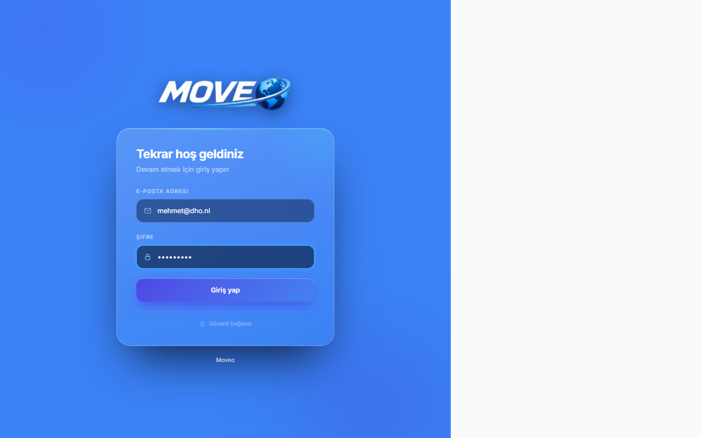
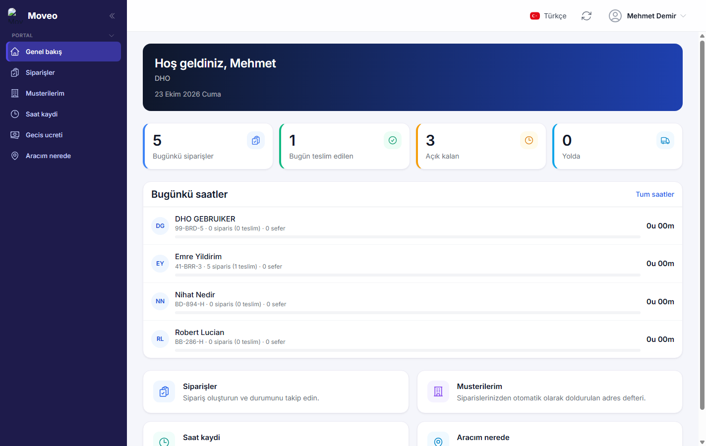
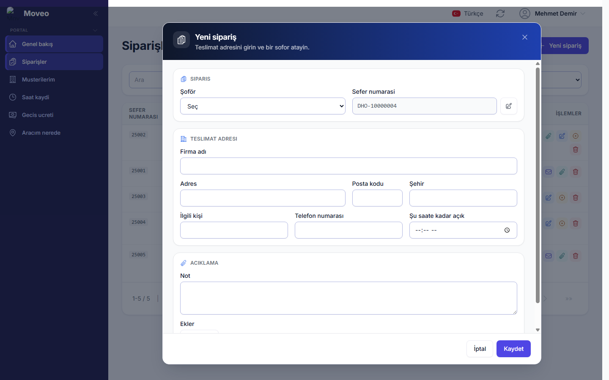
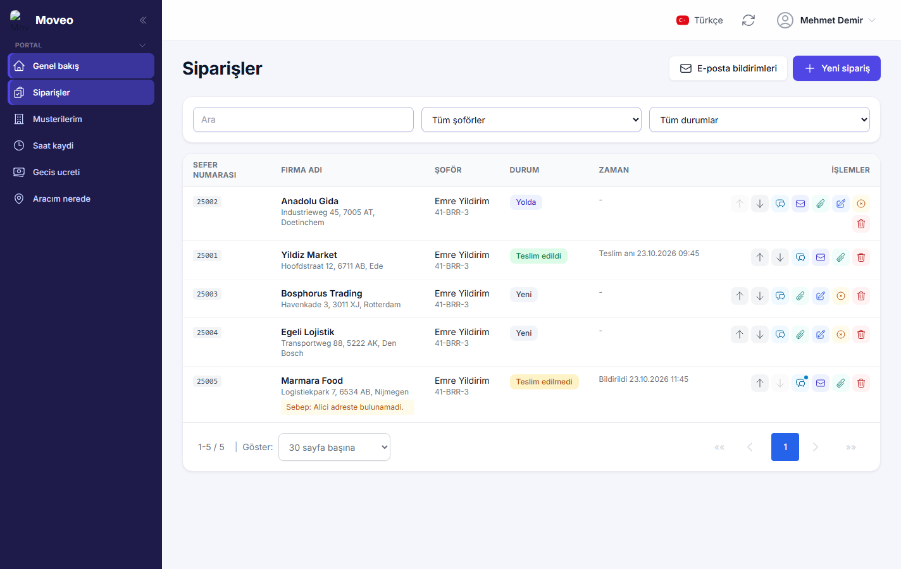
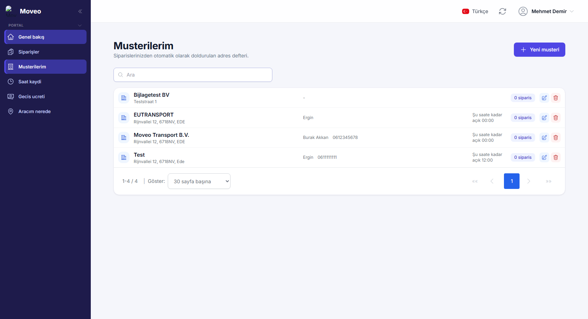
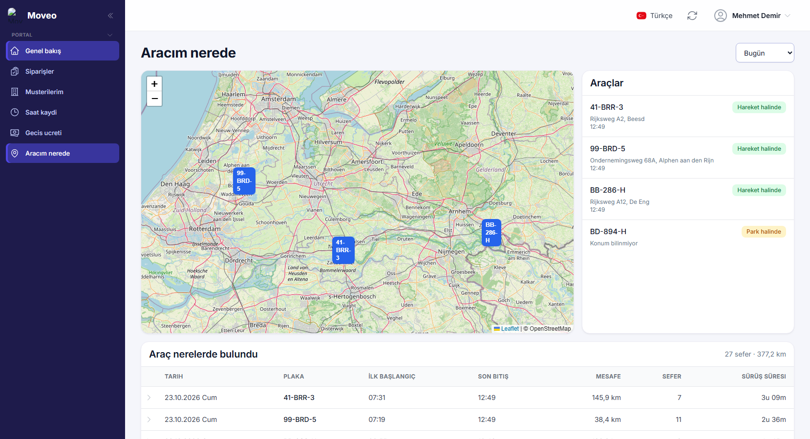
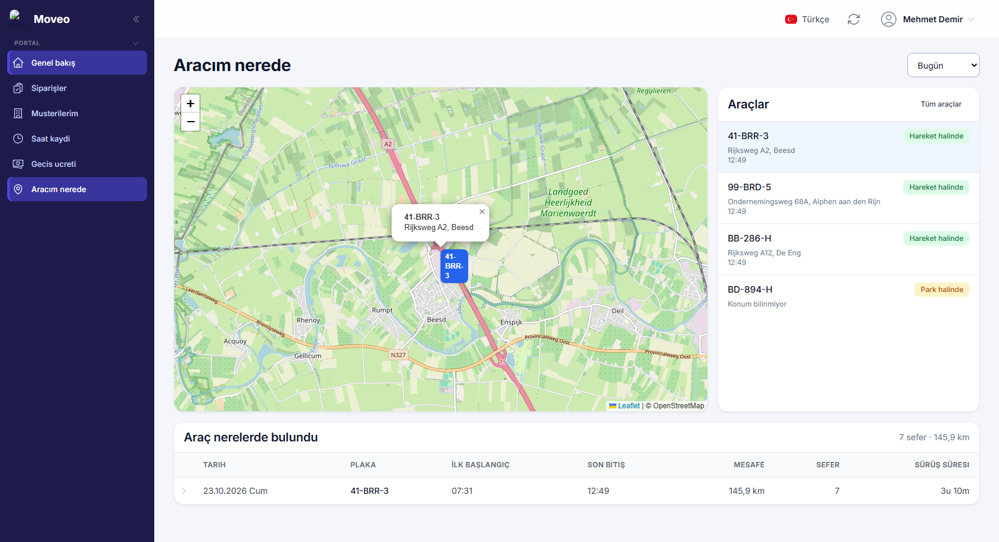
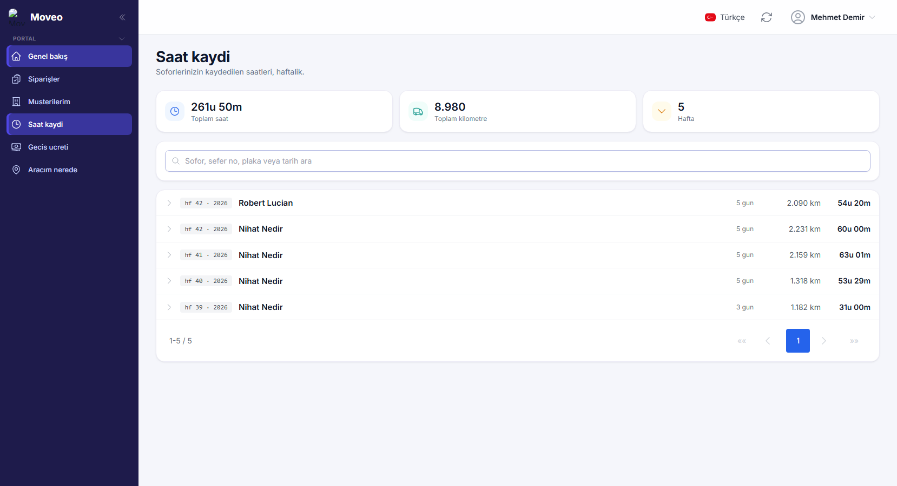

Sipariş verme, takip etme ve araç izleme kılavuzu
Müşteri (Opdrachtgever) kullanıcıları içinMoveo TMS, nakliye işini tek bir yerde toplayan bir taşıma yönetim sistemidir. Sistemde üç taraf birlikte çalışır: siparişi veren müşteri, işi yapan şoför ve her şeyi gözeten planlama ekibi. Üçü de aynı veriyi görür; kimse ayrı bir listeyle çalışmaz. Bu nedenle telefonla durum sorma ihtiyacı büyük ölçüde ortadan kalkar.
Bir siparişin hayatı her zaman aynı yolu izler. Siz bir sipariş oluşturursunuz ve onu bir şoföre atarsınız. Şoför siparişi telefonunda anında görür. Yola çıktığında siparişi başlatır, teslimatı yaptığında teslim edildi olarak bildirir. Teslimat gerçekleşmezse bunun sebebini yazar. Her adımda sistem sizi bilgilendirir ve sipariş listenizdeki durum kendiliğinden güncellenir.
| Durum | Anlamı | Ne zaman oluşur |
|---|---|---|
| Yeni | Sipariş oluşturuldu, şoför henüz başlamadı. | Siz siparişi kaydettiğiniz anda. |
| Yolda | Şoför işe başladı ve yola çıktı. | Şoför telefonunda "Siparişi başlat" dediğinde. |
| Teslim edildi | Yük teslim edildi, iş tamamlandı. | Şoför teslimatı bildirdiğinde. |
| Teslim edilmedi | Teslimat yapılamadı; sebebi kayıtlıdır. | Şoför sebep yazarak bildirdiğinde. |
| İptal edildi | Sipariş geri çekildi. | Siz siparişi iptal ettiğinizde. |
Sistem iki ayrı kanaldan haber verir. Şoföre anlık bildirim (push) gider: yeni bir sipariş geldiğinde, bir sipariş iptal edildiğinde veya sıralaması değiştiğinde telefonunda uyarı belirir. Size ve belirlediğiniz adreslere ise e-posta gider: iş başladığında, teslim edildiğinde ve teslim edilemediğinde. Hangi olaylarda e-posta gideceğini ve hangi adreslere gideceğini kendiniz belirlersiniz; bunu 8. bölümde anlatıyoruz.
Araçlar, araçlara takılı olan takip cihazları üzerinden izlenir. Sistem bu cihazlardan aracın bulunduğu konumu, hareket halinde olup olmadığını, yapılan seferleri, kilometre sayacını ve sürüş süresini alır. Bu veriler hem haritada hem de sipariş listenizde kullanılır. Size yalnızca kendi şirketinize atanmış araçlar gösterilir; diğer araçları göremezsiniz.
Tarayıcınızdan tms.moveo-bv.nl adresine gidin. E-posta adresinizi ve şifrenizi girip Giriş yap düğmesine basın. Şifrenizi unuttuysanız planlama ekibinden sıfırlama isteyin.

Giriş yaptıktan sonra sağ üst köşede dil düğmesini görürsünüz. Hollandaca, İngilizce ve Türkçe arasında istediğiniz zaman geçiş yapabilirsiniz. Seçiminiz tarayıcınızda saklanır, bir dahaki girişinizde aynı dille açılır.
Portal telefonda da çalışır ve ayrı bir uygulama gibi kurulabilir. Android cihazlarda tarayıcı menüsünden Ana ekrana ekle seçeneğini kullanın. iPhone'da Safari ile açıp paylaş menüsünden Ana Ekrana Ekle deyin. Kurulumdan sonra simgeye dokunarak adres çubuğu olmadan açılır.
Giriş yaptığınızda karşınıza gelen ilk ekran günün özetidir. Üstte dört sayaç bulunur: bugün oluşturulan siparişler, bugün teslim edilenler, hâlâ açık olanlar ve şu anda yolda olanlar. Her sayacın üzerine tıkladığınızda sipariş listesi o filtreyle açılır; böylece aradığınız grubu tek hareketle görürsünüz.
Bunun altında şoförlerinizin bugünkü saatleri listelenir. Her satırda şoförün adı, kullandığı araç, o güne ait sipariş ve teslimat sayısı, yapılan sefer sayısı ve toplam süre yer alır. Buradaki süre, aracın ilk hareketinden itibaren geçen süredir; molalar ve beklemeler de bu sürenin içindedir.

Sol menüden Siparişler sayfasını açın ve sağ üstteki Yeni sipariş düğmesine basın. Açılan formda teslimatın yapılacağı firmayı, adresi, posta kodunu ve şehri girersiniz. Daha önce sipariş verdiğiniz bir firmayı yazmaya başladığınızda sistem adres defterinden öneri sunar; seçtiğinizde adres alanları kendiliğinden dolar.
| Alan | Açıklama |
|---|---|
| Sefer numarası | Kendi referans numaranız. Listelerde ve e-postalarda görünür. |
| Firma adı | Teslimatın yapılacağı müşteri. |
| Adres, posta kodu, şehir | Şoförün navigasyonu bu bilgiyle açılır. |
| İlgili kişi ve telefon | Şoför tek dokunuşla arayabilir. |
| Şoför | Şirketinizin tüm şoförleri arasından seçebilirsiniz. |
| Açıklama | Teslimat saati, kapı numarası, özel talimatlar. |
| Şu saate kadar açık | Teslimatın en geç yapılması gereken saat. |

Siparişler sayfası, verdiğiniz bütün işlerin listesidir. Üstteki arama kutusuyla sefer numarasına, firmaya veya şehre göre arayabilir; yanındaki iki açılır listeyle şoföre ve duruma göre süzebilirsiniz. Liste kendiliğinden yenilenir, yani şoför bir siparişi başlattığında siz sayfayı yenilemeden görürsünüz.

Şoför işe başlamış olsa bile siparişi iptal edebilir, silebilir veya sırasını değiştirebilirsiniz. Böyle bir durumda şoförün telefonuna anında bildirim gider; iptal edilen veya silinen iş onun listesinden kalkar. Yanlış bir siparişin yola çıkması durumunda müdahale etmekten çekinmeyin.
Bir siparişe irsaliye, çizim, yükleme listesi gibi belgeler ekleyebilirsiniz. Sipariş satırındaki ataç simgesine basın, dosyayı seçin; yükleme biter bitmez şoför bu dosyayı telefonunda görür. Fotoğraf, PDF ve Excel dosyaları desteklenir.
Şoför de aynı şekilde ek yükleyebilir. Teslimat sırasında çektiği fotoğraf veya imzalı irsaliye doğrudan siparişin altında size ulaşır. Yüklenen dosyalar güvenli bir bağlantıyla korunur; yalnızca yetkili kullanıcılar açabilir.
Siparişler sayfasının üst kısmındaki E-posta bildirimleri düğmesiyle ayarları açarsınız. Burada üç olayın her biri için bildirim gönderilip gönderilmeyeceğini seçersiniz: iş başladığında, teslim edildiğinde ve teslim edilemediğinde. Ayrıca bildirimlerin gideceği adresleri ve gönderici adresini belirlersiniz.
Birden fazla adres ekleyebilirsiniz; örneğin kendi adresiniz, muhasebe ve depo sorumlusu. Adresleri tek tek ekleyip kaldırabilirsiniz. Bir e-posta gönderilemezse sistem bunu sipariş satırında işaretler, böylece sessizce kaybolmaz.
Müşterilerim sayfası, sipariş verdiğiniz firmaların listesidir. Yeni bir firmaya sipariş oluşturduğunuzda sistem o firmayı kendiliğinden buraya ekler. Böylece ikinci kez aynı adresi yazmak zorunda kalmazsınız.
Bir kaydın üzerindeki kalem simgesiyle adresi, ilgili kişiyi, telefonu ve teslimat için son saati düzenleyebilirsiniz. Kaydın yanındaki sipariş sayısına basarsanız o firmaya ait bütün siparişler listelenir.

Bu sayfa iki bölümden oluşur. Solda harita, sağda araç listesi vardır. Listede size atanmış her aracın plakası, o anki durumu, bulunduğu adres ve bu bilginin alındığı saat görünür. Bir araca tıkladığınızda harita o araca odaklanır ve alt kısımda o aracın günlük özeti açılır.

Araç seçtiğinizde ilk hareket saati, son duruş saati, kilometre sayacının gün başındaki ve o anki değeri ile gün içinde yapılan toplam kilometre gösterilir. Sayfanın altındaki tabloda ise günlere göre sefer listesi bulunur. Bir günün satırını açtığınızda o günün tek tek seferlerini, nereden nereye gidildiğini ve her seferin mesafesini görürsünüz.

Üst sağdaki açılır listeden bugünü, son yedi günü veya son otuz bir günü seçebilirsiniz. Takip sağlayıcısı en fazla yaklaşık bir aylık geçmiş verir; daha eski veriler bu ekranda gösterilmez.
Saat kaydı sayfası şoförlerinizin haftalık çalışma sürelerini gösterir. Süreler araç verisinden hesaplanır; aracın ilk hareketi ile son duruşu arasındaki zamanı kapsar.
Geçiş ücreti sayfasında araçlarınızın geçtiği ücretli yollar ve bunların tutarları listelenir. Bu bilgiler yakıt ve geçiş kartı sağlayıcısından gelir ve faturalandırmaya esas oluşturur.

Önce siparişin doğru şoföre atandığından emin olun. Şoför uygulamayı tamamen kapatıp yeniden açtığında liste güncellenir. Sorun sürerse planlama ekibine bildirin.
Telefonun bildirim izni kapalı olabilir. Cihaz ayarlarından uygulamaya bildirim izni verildiğinden emin olun. iPhone'da uygulamanın ana ekrana eklenmiş olması gerekir.
Araç uzun süre hareketsizse veya cihaz sinyal alamıyorsa konum güncellenmez. Listede "Konum bilinmiyor" yazar. Araç yeniden hareket ettiğinde konum kendiliğinden gelir.
Henüz başlamamışsa düzenleyin veya silin. Şoför başlamışsa iptal edin; şoföre anında bildirim gider ve iş listesinden düşer.
Bu veriler araçtaki takip cihazından gelir ve aracın hareketine dayanır. Molalar, beklemeler ve manevra hareketleri de kayda girer. Bu nedenle rakamlar bir şoförün kendi kalemle tuttuğu kayıttan farklı olabilir.